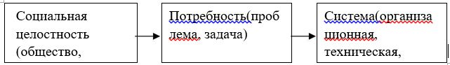
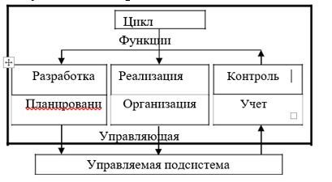

Лабораторная работа 16.
Изучение методов построения комплексной защиты управления информационной безопасностью
Цель работы: изучить методы построения комплексной защиты управления информационной безопасностью.
Понятие и цели управления
Социотехнические системы, представляя собой единение человека и техники, всегда характеризуются определенными целями, которые ставят перед собой люди, достигая их с помощью технических средств, с которыми общаются через интеллектуального посредника. Причем цели и допустимые стратегии социотехнической системы в реальных ситуациях принятия решений по их защите зачастую субъективны и не могут быть точно определены. Это происходит преимущественно по той причине, что, помимо объективных законов, в их функционировании существенную роль играют субъективные представления, суждения, поступки и даже эмоции людей. Действительно, при исследовании безопасности объекта информатизации, расположенного на некотором предприятии, значительное количество информации об этом объекте может быть получено от различных групп людей:
а) имеющих опыт управления предприятием и представляющих его цели и задачи, но не знающих досконально особенностей функционирования объекта информатизации;
б) знающих особенности функционирования объекта информатизации, но не имеющих полного представления о его целях;
в) знающих теорию и практику организации защиты, но не имеющих четких представлений о целях, задачах и особенностях функционирования объекта информатизации как системы в целом и т. п.
Поэтому получаемая от них информация, как правило, носит субъективный характер, а ее представление на естественном языке, не имея аналогов в языке традиционной математики, содержит большое число неопределенностей типа «много», «мало» — если речь идет о вложениях денежных средств в совершенствование системы защиты; объекта или об изменении количества персонала, работающего в подразделениях его защиты; «не выполнены частично», «выполнены частично», «почти выполнены» и т. д. — если речь идет о выполнении требований руководящих документов по защите информации и т. д. Поэтому и описание подобной информации на языке традиционной математики обедняет математическую модель исследуемой реальной системы и делает ее слишком грубой.
По определению С. Л. Оптнера, система — это устройство, предназначенное для решения проблем. Конечно, это определение следует относить лишь к искусственным системам (организационным, техническим, научным), которые существенно отличаются от живых. Они не обладают (да и не должны обладать) той самостоятельностью и независимостью, которая характерна для биологических объектов. Искусственные системы зависимы от субъекта и создаются под заранее спланированные цели. Состав, структура и функции таких систем подчинены достижению этих целей. Цель же создания любой искусственной системы — удовлетворение конкретной осознанной потребности человека, коллектива или общества в целом
Следует подчеркнуть, что общественная потребность является основой не только организационных, но и технических систем. По мнению Я. Дитриха, сущность технических систем заключается в удовлетворении человеческих потребностей в условиях общественной жизни. В процесс удовлетворения общественных потребностей входят выявление потребностей, проектирование, конструирование и эксплуатация технических средств.
В связи с развитием системного анализа как основного инструментария решении сложных проблем вместо понятия «потребность» все чаще стали использовать понятие «проблема», или «задача» («проблема» — греческое слово и в переводе означает «задача»). Связь между понятиями «проблема» и
«потребность» можно выразить, определив проблему как неудовлетворенную потребность. Решить проблему — значит удовлетворить потребность, ликвидировать несоответствие между желаемым и фактическим положением дел.
Проблемы могут быть простыми и сложными. Можно различать также объектные, процессные и научно-исследовательские проблемы. Объектные проблемы выражают неудовлетворенность субъекта (общества, коллектива, индивидуума) окружающими его объектами и требуют изменить эти объекты или создать новые. Процессные проблемы выражают неудовлетворенность субъекта происходящими вокруг него процессами и требуют изменить эти процессы желаемым образом. Научно-исследовательские проблемы выражают неудовлетворенность субъекта своими знаниями об окружающих его объектах и наблюдаемых процессах.
Проблемы различают также:
• по признаку социальной осознанности: личные, коллективные, общественные ;
• до основному содержанию: экономические, социальные, политические , научные, технические;
• по возможности решения на основе целевых программ;
• программируемые и непрограммируемые.
На протяжении тысячелетий люди создавали ОС, пользуясь интуицией, здравым смыслом и опытом прошлого. С возникновением письменности практический опыт построения систем стал переноситься на бумагу в виде проектов и передаваться будущему поколению. Таким образом, для построения новых ОС конструктор получил возможность пользоваться готовыми проектами аналогичных систем, хорошо зарекомендовавших себя в прошлом.
Разработка сложной системы разбивается на два этапа: внешнее (или макро-) и внутреннее (или микро-) проектирование. Внешнее проектирование отвечает на вопрос: с какой целью создается система?
Внутреннее — на вопрос: какими средствами реализуется система? Другими словами: «При внешнем проектировании формируется цель и критерий эффективности будущей системы, создается и экспериментально проверяется, а затем корректируется ее модель. Локализуется сама система, определяются ее границы, фиксируются факторы внешней среды, влияющие на систему или находящиеся под ее влиянием; определяются входы, на которые система должна реагировать, и виды реакций, критерии эффективности ее функционирования. Внутреннее проектирование определяет содержание самой системы».
Этап внешнего проектирования складывается из подэтапов анализа и синтеза. На первом подэтапе формулируется цель разрабатываемой системы, проводится изучение существующей системы, составляется генеральная схема будущей системы. На втором — последовательно выполняется эскизное, техническое и рабочее проектирование системы.
КСЗИ создается с целью обеспечения надежной защиты информации на соответствующем объекте, поэтому функциями, подлежащими осуществлению в данной системе будут функции защиты, т. е. совокупность однородных отношений и мероприятий, регулярно осуществляемых на предприятии с целью создания и поддержания условий, необходимых для надежной ЗИ.
Максимально эффективной защита информации будет лишь в том случае, если созданы надежные механизмы защиты, а в процессе функционирования системы осуществляется непрерывное управление этими механизмами.
КСЗИ должно быть предусмотрено два вида функций:
• функции, основной целью которых является создание механизмов защиты ;
функции, осуществляемые с целью непрерывного и оптимального управления механизмами защиты.
Технология — это совокупность методов обработки, изменения состояния, свойств, формы сырья, материала или полуфабриката,
осуществляемых в процессе производства продукции.
Исходя из вышесказанного, технологию организационного управления можно определить как регламентированную совокупность методов и средств управления коллективами людей в процессе достижения целей их
деятельности .
Организационное управление прежде всего — вид человеческой деятельности и как всякая деятельность можно рассматриваться в 2 основных
аспектах :
• организация содержания деятельности, т. е. что делается (каковы функции и цели системы управления);
• организация самого процесса, т. е. как делается (какими методами достигается поставленная цель и осуществляется сам процесс управления).
Управление определяется как элемент, функция организованных систем различной природы, обеспечивающая сохранность их определенной структуры, поддержание режимов деятельности, реализацию их программ и целей.
Общая цель управления — обеспечение максимально возможной эффективности использования ресурсов.
Задачи управления:
• Обеспечение заданного уровня достижения цели при минимальном уровне затрат;
• Обеспечение максимального уровня достижения цели при заданном уровне затрат.
• Технология управления должна быть построена так, чтобы обеспечивать эффективную обработку информации для всех функциональных подразделений при рациональном использовании ресурсов ВТ. При соблюдении всех правил управления и обращения с информацией это требование может быть конкретизировано следующим образом.
Технология управления должна быть разработана так, чтобы обеспечить:
• комплексную автоматизацию всех процессов обработки данных и
управления ;
• единство органов, средств и методов управления;
• максимальную автоматизацию при решении всех задач, объективно возникающих в процессе функционирования органов управления, в том числе задач персонального информационного обеспечения, задач выработки управленческих решений и задач информационного сопряжения
взаимодействующих систем.
Одним из активных звеньев технологии управления является человек, причем человек рассматривается как субъект управления и как объект
управления .
В соответствии с этим сформулируем требования к технологии
управления :
Обеспечение разделения труда, выражающееся в конкретизации функциональных обязанностей руководителей и специалистов органов
управления ;
Максимальная формализация всех трудовых процессов, осуществляемых в органах управления, заключается в введении количественных оценок в управленческие процессы, в использовании математических методов в управлении, а также в применении к управленческим системам таких понятий, как устойчивость, надежность и
эффективность ;
Регламентация взаимодействия работников органов управления между собой и средствами автоматизации, которая заключается в создании комплекса правил, предписаний, указаний и ограничений, закрепленных в соответствующих нормативно-методических документах и носящих обязательный характер;
Обеспечение психологических совместимостей руководителей и специалистов органов управления со средствами автоматизации;
Повышение исполнительской дисциплины работников органов управления.
Главным направлением построения технологии организационного управления, удовлетворяющим перечисленным выше требованиям, является разработка технологий, на индустриальной основе в широким применением вычислительной техники и автоматизации технологических процессов управления.
Чтобы разработать эффективную технологию управления, необходимо решить следующие проблемы:
Разработать, утвердить и внедрить стандартные элементы технологии управления;
Разработать и внедрить стандартные и методы решения задач всех классов;
Максимальная формализация решения всех задач, объективно возникающих в процессе функционирования системы управления;
Разработать и внедрить типовую методологию построения и проектирования технологии организационного управления и стандартных элементов.
Таким образом, первым шагом построения технологии управления, удовлетворяющей современным требованиям, является структуризация основных процессов управления, т. е. схематизация объектов, процессов или явлений до степени однозначного определения каждого элемента.
Структуризация основных процессов технологии управления является не только этапом разработки технологии управления, но и сама по себе позволяет в значительной степени повысить эффективность управления за счет рационализации и единой организации управления труда независимо от степени использования в управлении средств автоматизации.
Поэтому под структурированной технологией управления будем понимать управляемую совокупность приемов, правил и методов осуществления всех процессов управления.
Основные критерии построения и рационализации технологии управления:
• выполнение всех процедур управления в полном объеме, своевременно и в строгом соответствии с обоснованными решениями;
• максимально эффективное информационное обеспечение всего процесса управления;
• максимальная автоматизация рутинных, нетворческих процедур технологии управления и информационного обеспечения.
Поэтому рационализацию технологии управления в самом общем видеможно представить последовательностью следующих действий:
• Определение совокупности процедур собственно управления,
• Подлежащих осуществлению в соответствующем интервале времени;
• Определение перечня и содержания информации, необходимой для
• Осуществления процедур управления в данном интервале времени;
• Организация подготовки необходимой информации;
• Организация и обеспечение осуществления процедур управления.
Структуризация процессов позволяет сама по себе независимо от использования средств автоматизации значительно повысить эффективность управления за счет лучшей ее организации. Поэтому функционирование системы управления в самом общем виде можно представить как разработку планов функционирования управляемых объектов и их реализацию.
Требования, предъявляемые к системам управления, по которым можно судить о степени организованности систем:
детерминированность элементов;
динамичность системы;
наличие в системе управляющего параметра;
наличие в системе контролирующего параметра;
наличие в системе каналов (по крайней мере, одного) обратной связи .
Соблюдение этих требований должно обеспечивать условия
эффективного уровня функционирования органов управления.
В системах управления детерминированность проявляется в организации взаимодействия подразделений органов управления, при которой деятельность одного элемента (управления, отдела) сказывается на других элементах системы. Если в организационной структуре управления, например, есть отдел, действия которого не влияют на другие подразделения, то такой отдел не реализует ни одну из целей функционирования организации и является лишним в системе управления.
Вторым требованием является динамичность, т. е. способность под воздействием внешних и внутренних возмущений оставаться некоторое время в определенном неизменном качественном состоянии.
Любые воздействия среды оказывают возмущающее действие на систему, стремясь нарушить ее. В самой системе также могут появиться возмущения, которые стремятся разрушить ее «изнутри». Например, в организации нет достаточного количества квалифицированных кадров, отсутствует по каким-то причинам ряд ответственных работников, плохие условия работы и т. д.
К внешним возмущениям следует отнести указы вышестоящих организаций, изменения ситуаций на рынке, экономические и политические факторы .
Под воздействием таких внешних и внутренних возмущений орган управления любого уровня вынужден перестраиваться, приспосабливаться к изменившимся условиям.
С целью обеспечения быстрого перестроения системы в условиях изменения среды в системе управления должен быть элемент, фиксирующий факт появления возмущения; система должна обладать минимально допустимой инерционностью, чтобы своевременно принимать управленческие решения, в системе управления должен быть элемент, фиксирующий факт упорядочения состояния системы в соответствии с изменившимися условиями. В соответствии с этими требованиями в структуре управления предприятием должен быть отдел совершенствования структуры управления.
Под управляющим параметром в системе управления следует понимать такой ее параметр (элемент), посредством которого можно управлять деятельностью всей системы и ее отдельными элементами. Таким параметром (элементом) в социально управляемой системе является руководитель подразделения данного уровня. Он отвечает за деятельность подчиненного ему подразделения, воспринимает управляющие сигналы руководства организации, организует их выполнение, несет ответственность за выполнение всех управленческих решений.
При этом руководитель должен обладать необходимой компетенцией, а условия работы — позволять выполнить данное поручение. Следовательно, условие наличия управляющего параметра можно считать выполненным, если, внешнюю информацию воспринимает руководитель организации, который организует работы по выполнению поручения, распределяет задания в соответствии с должностными инструкциями при наличии условий, необходимых для выполнения поручений.
Следующим, четвертым требованием, предъявленным к системам управления, следует назвать наличие в ней контролирующего параметра, т. е. такого элемента, который постоянно контролировал бы состояние субъекта управления, не оказывая при этом на него (или на любой элемент системы) управляющего воздействия.
Контроль субъекта управления предполагает курирование обработки любого управляющего сигнала, поданного на вход данной системы. Функцию контролирующего параметра в системе управления, как правило, реализует один из сотрудников аппарата управления. Например, подготовку плана важнейших работ курирует главный специалист по экономике. Любые управленческие решения в системе управления должны проходить только через элемент, выполняющий функции контролирующего параметра.
Наличие прямых и обратных связей (пятое требование) в системе обеспечивается четкой регламентацией деятельности аппарата управления по приему и передаче информации при подготовке управленческих решений.
В целом структура процесса управления представлена на рис. 31 (с.
220).
Планирование деятельности
Вся сложная совокупность управленческих действий — на любом
уровне и в любой системе — может быть сведена к перечню функций, составляющих замкнутый цикл управления:
принятие управленческого решения;
реализация решения;
контроль.

Рис. 31. Структура процесса управления
Из рис. 32 видно, что планирование является первыми шагом в цикле управления.
Планирование как функция управления имеет сложную структуру и реализуется через свои подфункции: прогнозирование, моделирование и программирование.
Прогнозирование — это метод научно обоснованного предвидения возможных направлений будущего развития организации, рассматриваемой в тесном взаимодействии с окружающей ее средой. Прогнозы носят вероятностный характер, но, если прогнозирование выполняется качественно, результатом станет прогноз будущего, который вполне можно использовать как основу для планирования.

Рис. 32. Схема связи и взаимодействия функций управления
Таким образом, прогнозирование составляет первую ступень планирования. Оно должно обеспечить решение следующих задач:
научное предвидение будущего на основе выявления тенденций и закономерностей развития;
определение в перспективе конечного состояния системы ее переходных состояний, а также ее поведения в различных ситуациях на пути заданному оптимальному режиму функционирования.
Важнейшее условие прогнозирования — моделирование различных ситуаций и состояний системы в течении планируемого периода.
Задача программирования — третья функция планирования, — исходя из реальных условий функционирования системы, запрограммировать ее переход в новое заданное состояние. Сюда входит разработка алгоритма функционирования системы, определение требующихся ресурсов, выбор средств и методов управления.
Таким образом, назначение планирования как функции управления состоит в стремлении заблаговременно учесть по возможности все внутренние и внешние факторы, обеспечивающие благоприятные условия для нормального функционирования и развития предприятия. Оно предусматривает разработку комплекса мероприятий, определяющих последовательность достижения конкретных целей с учетом возможностей наиболее эффективного использования ресурсов каждым подразделением. Поэтому планирование также должно обеспечить взаимоувязку между отдельными структурными подразделениями предприятия, включающими всю технологическую цепочку.
Обобщенные цели планирования регламентируют общий целевой подход в процессе разработки плана, а именно, выделяются две постановки целей:
а) если достижение некоторого результата является обязательным условием планируемой деятельности, то план должен разрабатываться таким образом, чтобы этот результат достигался при минимальных затратах ресурсов, т. е. нам задан результат, который должен быть достигнут при минимальном расходе ресурсов;
б) если для планируемых действий выделяются ограниченные ресурсы, то план должен быть разработан таким образом, чтобы при расходовании выделенных ресурсов достигался наибольший конечный результат, т. е. нам заданы ресурсы и при заданных ресурсах необходимо достичь максимального результата.
Планирование охватывает как текущий, так и перспективный период.
Если перспективное планирование должно определять общие стратегические цели и направления развития предприятия, необходимые для этого ресурсы и этапы решения поставленных задач, то разрабатываемые на его основе текущие планы ориентированы на фактическое достижение намеченных целей, исходя из конкретных условий. Поэтому текущие планы
дополняют, развивают и корректируют перспективы направления развития с учетом конкретной обстановки.
Формы планирования в зависимости от длительности планового периода:
а) перспективное планирование (на 5 и более лет). При данном виде планирования нет ограничений по ресурсам;
б) среднесрочное планирование (от 1 до 5 лет). При данном виде планирования есть резерв ресурсов, который может быть использован;
в) текущее (рабочее) планирование (от 1 мес. до 1 года). Используют только имеющиеся ресурсы.
Поскольку оценка перспектив неопределенна, перспективное планирование не может быть ориентировано на достижение количественных показателей и поэтому обычно ограничивается разработкой лишь важнейших
качественных характеристик, конкретизируемых в программах или прогнозах.
На основе программы разрабатываются среднесрочные планы, которые уже содержат не только качественные характеристики, но и количественные показатели, детализированные и конкретизированные с точки зрения выбора средств для реализации целей, намеченных в рамках перспективного планирования.
Основными звеньями текущего плана являются календарные планы (месячные, квартальные, полугодовые), которые представляют собой детальную конкретизацию целей и задач, поставленных перспективными и среднесрочными планами.
Планирование как функция управления системой сохранения секретов реализуется через систему принципов, связанных с общими принципами управления, которые и должны быть положены в основу планирования:
директивность, т. е. обязательный характер планов;
преемственность — сочетание и взаимосвязь перспективного и текущего планирования: использование положительного опыта работы, учет допущенных недостатков и просчетов;
конкретность — постановка четких целей и задач, определение наиболее рациональных путей, методов и способов их достижения, установление ответственности конкретных лиц за организацию и выполнение плановых мероприятий, определение оптимальных и реальных сроков их реализации;
гибкость — наличие возможностей маневра имеющимися силами и средствами в ходе выполнения плана, а также корректировка плана в случае изменения обстановки;
проблемность — нацеленность мероприятий на решение значимых вопросов, сосредоточение усилий работников на основных направлениях их деятельности, недопущение распыленности в использовании сил и средств;
комплексность — обеспечение использования всей системы мер по защите тайны на различных направлениях, в подразделениях, учет интересов всех, кто ведет работу на смежных участках, согласование и увязка на различных уровнях всех задач и способов их достижения;
экономичность — максимальные результаты должны достигаться при наименьших затратах сил и средств.
Качественное планирование позволяет организовать работу по решению первостепенных, наиболее важных вопросов в конкретный период времени, добиться наилучших результатов в работе при затрате наименьших сил и средств, повысит ответственность исполнителей за порученный участок работы, улучшит контроль, за выполнением мероприятий в установленные сроки. В процессе составления плана руководитель готовит организационную основу для объединения усилий работников в единую систему в интересах достижения поставленной цели.
Планирование может быть организовано разными способами.
Анализ. При таком способе планирования на самом высшем уровне разрабатываются основные компоненты плана: цели, задачи, возможные условия, выделенные ресурсы и др. Определяются основные задачи подразделений. Также на уровне подразделений — анализируют цели, задачи, ресурсы, сроки на уровне подразделений. Аналогично происходит на низшем уровне.
Синтез. В этом случае сначала составляют планы на низшем уровне, которые затем, последовательно обобщенные, синтезируют в соответствии и иерархической структурой.
Итерация. При таком способе определяют отправные установки планирования и на их основе вырабатывается первое приближение плана. На основе наилучшего варианта уточняются и корректируются исходные установки и разрабатывается следующее приближение плана и так до тех пор, пока не будет получен приемлемый вариант плана, который должен удовлетворять требованиям, как отдельных структур, так и всей системы в целом.
На определение сроков осуществления намеченных мероприятий влияют: прошлый опыт их реализации, трудоемкость, условия, в которых они будут выполняться, подготовленность исполнителей.
Содержание мероприятия должно включать: желаемый результат, краткую программу действий, планируемые к использованию, силы и средства, срок исполнения.
Основные положения вновь разработанного плана базируется на результатах проделанной работы по выполнению планов за предыдущий
период и согласовываются с планами на смежных направлениях деятельности.
В начальной стадии планирования руководитель всесторонние изучает обстановку по защите информации на предприятии, ту совокупность условий, событий, обстоятельств проведения закрытых работ, которые оказывают существенное влияние на надежность и эффективность защиты. Моделируются вероятные тенденции ее изменения, появление принципиально новых факторов (условий, событий).
Мероприятия в плане следует систематизировать по следующим четырем разделам:
организационно-методическая работа;
контрольно-проверочная работа;
профилактическая работа;
работа с кадрами.
вводной части делается анализ и оценка обстановки на предприятии с точки зрения решения вопросов по защите сведений, акцентируется внимание на ее главных особенностях. Оценка и прогноз развития обстановки служат исходной базой для определения содержания основных разделов плана.
Организационно-методическая деятельность может включать в себя:
разработку инструкций, методик по различным направлениям
режима охраны информации;
внесение изменений и дополнений в действующие инструкции, методики с учетом изменившихся условий;
разработку и внедрение новых организационных методов защиты информации ;
обеспечение мероприятий в связи с приемом делегаций, командированных , участием в работе конференций и т. д.;
подготовку и проведение крупных совещаний, заседаний, экспертных комиссий, выставок и т. п.;
совершенствование системы делопроизводства, технологии обработки документов;
разработку и внедрение информационно-поисковых систем для классифицированных документов;
заслушивание руководителей различных уровней о ходе выполнения утвержденных директором мероприятий;
обоснование и внедрение новых технических средств охраны;
совершенствование структуры подразделения экономической безопасности, создание и оборудование новых рабочих мест;
Контрольно-проверочная работа может рассматриваться и как проверка исполнения, и как изучение состояния дел, что приближает ее к
аналитической работе. Она включает в себя:
• контроль за выполнением работниками предприятия требований соответствующих приказов, инструкций;
• проверку выполнения мероприятий, разработанных по результатам предыдущих анализов, проверок;
• контроль за порядком хранения и обращения с носителями тайны на рабочих местах;
Разработка плана невозможна без анализа предыдущей деятельности. Оцениваются имевшиеся случаи нарушения режима, причины и условия им сопутствующие. С учетом возможностей определяется надежность принимаемых мер по защите сведений. Рассматривается целесообразность привлечения необходимых средств и сил.
В процессе планирования должны быть выделены следующие стадии.
- Обоснование целей и критериев, которое заключается в
формулировании целей, которые представляют собой совокупность желаемых результатов и имеют иерархическую структуру. Плановые цели должны обеспечивать основу для единообразного планирования на всех уровнях управления, предпосылки для последующего более детального планирования, основу для руководства выполнения планов, для мотивации
поведения людей, т. е. понимании ими значения выполняемых работ; основу для четкого распределения ответственности и децентрализации планирования на всех уровнях управления, для координации различной деятельности функциональных подразделений аппарата управления КСЗИ;
выборе критериев, который определяется целями планируемой
деятельности .
2. Анализ условий. На этой стадии анализируются условия, в которых будет осуществляться планируемая деятельность. Анализу подлежат как внешние условия, так и внутренние (организационная структура, характеристики персонала, имеющиеся технологические схемы и т. д.).
Кроме того, в ходе функционирования КСЗИ могут возникнуть различные непредвиденные ситуации а также система будет испытывать на себе воздействие дестабилизирующих факторов.
Все эти условия должны быть проанализированы на данной стадии.
3. Формирование задач. Осуществляется постановка задачи и формируется комплекс задач, решение которых приведет к достижению конкретных плановых целей, а также определяются метода и разрабатываются процедуры решения каждой задачи .
4. Анализ ресурсов, которые могут быть использованы для решения задач .
Анализируют материальные (информационные, технические, программные, математические, лингвистические) и людские ресурсы. Разрабатываются прогнозы изменения этих ресурсов в процессе реализации планов. Определение факторов, влияющих на удовлетворение потребностей в ресурсах, зависит от вида планирования, т. е. от длительности планируемого периода.
5. Согласование целей, задач, условий, ресурсов.
На этой стадии происходит выделение комплексов задач в соответствии с целями и условиями распределения ресурсов по задачам и закрепление за каждой задачей конкретных исполнителей.
6. Определение последовательности выполнения задач.
Происходит путем установления взаимосвязи результатов решений задач. Определяет время, необходимое для выполнения каждой задачи, сроки выполнения, определяются ответственные за выполнение задач.
Определение методов контроля выполнения планов:
• зависит от целей планирования, выбранных критериев, а также подхода и методов планирования;
• включает в себя определение параметров плана и разработку
соответствующих процедур контроля.
Методы контроля будут эффективны только тогда, когда они выявляют
характер и причины отклонения от плана.
8. Определение порядка корректировки планов.
Порядок должен быть регламентирован. Корректировка должна проводиться в той мере, в какой это необходимо для достижения поставленных целей.
На этой стадии определяются параметры планов, подлежащих корректировке, условия корректировки планов, способы корректировки и разрабатываются процедуры корректировки планов.
Таким образом, можно сделать следующие основные выводы:
• планирование является неотъемлемой частью деятельности КСЗИ, как и деятельности любых других систем;
• от рационального планирования зависит эффективность деятельности КСЗИ, а также принятие решений в экстремальных ситуациях.
Контроль деятельности
Контроль является одним из важнейших и необходимых направлений работ по ЗИ. Цель контроля выявить слабые места системы, допущенные ошибки , своевременно исправить их и не допустить повторения.
Основными задачами контроля являются:
• Определение обоснованности и практической целесообразности проводимых мероприятий по ЗИ;
• Выявление фактического состояния СЗИ в данный период времени;
Меры контроля представляют собой совокупность организационных и технических мероприятий, проводимых с целью проверки выполнения установленных требований и норм по ЗИ. Организационные меры контроля включают:
Проверку выполнения сотрудниками требований по обеспечению сохранности КТ. Такая проверка может проводиться в течение рабочего дня руководителем предприятия, его заместителем, исполнительными директорами, начальниками объектов;
Проверку выполнения пропускного режима, то есть проверка наличия постоянных пропусков у сотрудников предприятия, проверка работы охранника (на месте или нет, проверяет пропуска или нет). Может проводиться ежедневно начальником охраны объекта;
Проверку выполнения сотрудниками правил работы с конфиденциальными документами (правила хранения, размножения и копирования) проводится заместителем руководителя в любое время;
Проверку наличия защищаемых носителей конфиденциальной информации проводят сотрудники предприятия в конце рабочего дня.
Три вида контроля
Предварительный контроль обычно реализуется в форме определенной политики, процедур и правил. Прежде всего, он применяется по отношению к трудовым, материальным и финансовым ресурсам. Предварительный контроль осуществляется при любых изменениях состава, структуры и алгоритма функционирования СЗИ, т. е. при установке нового технического устройства, при приеме нового сотрудника, при проведении ремонтных работ.
Текущий контроль осуществляется, когда работа уже идет и обычно производится в виде контроля работы подчиненного его непосредственным начальником.
Заключительный контроль осуществляется после того, как работа закончена или истекло отведенное для нее время.
Также с целью обеспечения систематического наблюдения за уровнем защиты может осуществляться периодический контроль. Периодический контроль (ежедневный) проводится сотрудниками предприятия в части
проверки наличия носителей информации, с которыми они работают. Периодический контроль может быть гласным и негласным.
Гласный периодический контроль эффективности ЗИ проводится выборочно (применительно к отдельным структурным подразделениям или отдельным работам) или на всем предприятии по планам, утвержденным руководством.
Негласный контроль осуществляется с целью объективной оценки уровня ЗИ и, прежде всего, выявления слабых мест в СЗИ. Кроме того, такой контроль оказывает психологическое воздействие на сотрудников, вынуждая их более тщательно выполнять требования по обеспечению ЗИ.